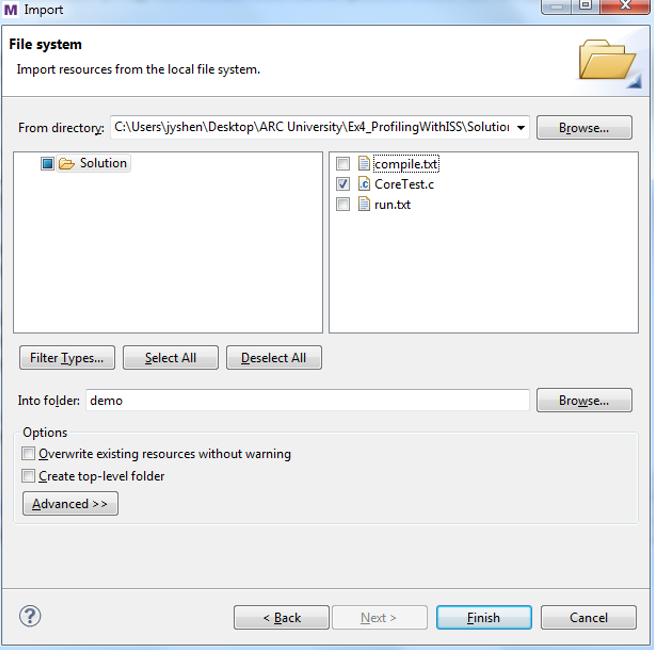
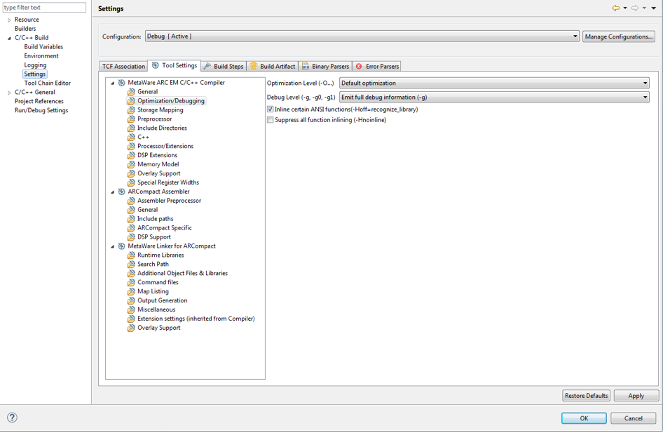
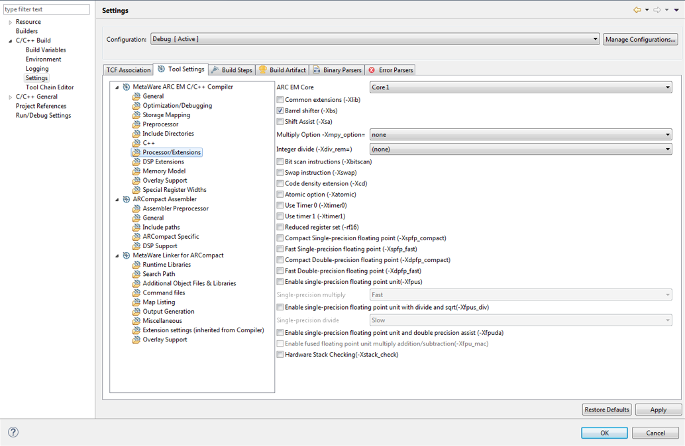
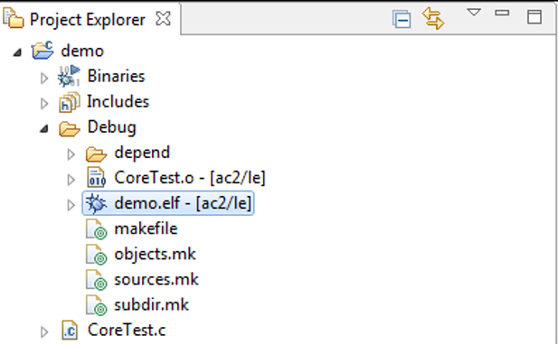
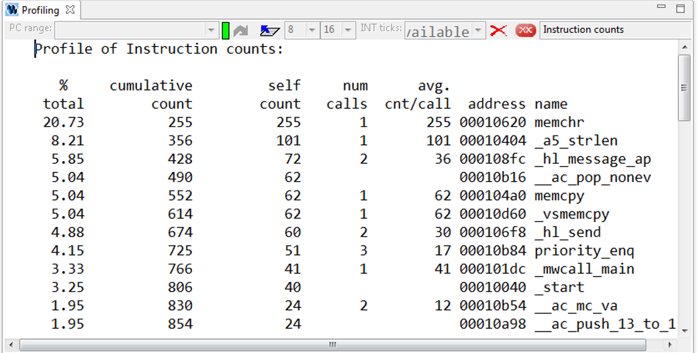
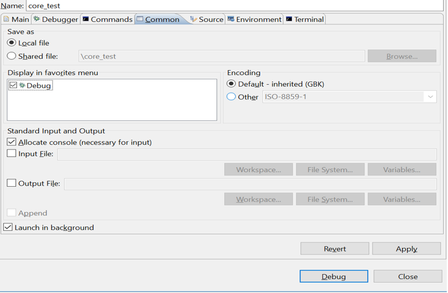
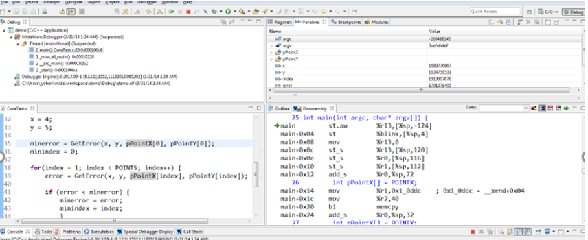

How to use ARC IDE¶
MetaWare ToolKit¶
Purpose¶
- To learn the MetaWare IDE integration interface
- To get familiar with the use of the MetaWare IDE interface and command line
- To get familiar with the features and usage of the MetaWare Debugger debugger
Equipment¶
The following hardware and software tools are required:
- PC host
- MetaWare Development Toolkit
- nSIM simulator or ARC board (EM Starter kit/IoT Development Kit)
labs/lab1_core_test
PC, MetaWare Development Toolkit, nSIM simulator, core_test source file in embAR OSP
Content¶
Create a C project using the Metaware IDE graphical interface, import the code CoreTest.c, configure compilation options to compile, and generate executable files.
Start the debugger of MetaWare IDE and enter debug mode. From the different angles of C language and assembly language, use the functions of setting breakpoint, single step execution, full speed execution, etc., combined with observing PC address, register status, global variable status and Profiling performance to analyze the debug target program.
Principles¶
Use the MetaWare IDE integrated development environment to create projects and load code. In the engineering unit, configure the compile option to compilation code, debug and analyze the compiled executable file.
Routine code CoreTest.c:
/////////////////////////////////////////////////////////////////////////
// This small demo program finds the data point that is the
// minimal distance from x and y [here arbitrarily defined to be (4,5)]
//
// #define/undefine '_DEBUG' precompiler variable to obtain
// desired functionality. Including _DEBUG will bring in the
// I/O library to print results of the search.
//
// For purposes of simplicity, the data points used in the computations
// are hardcoded into the POINTX and POINTY constant values below
/////////////////////////////////////////////////////////////////////////
#ifdef _DEBUG
#include "stdio.h"
#endif
#define POINTX {1, 2, 3, 4, 5, 6, 7, 8, 9, 10}
#define POINTY {2, 4, 6, 8, 10, 12, 14, 16, 18, 20}
#define POINTS 10
#define GetError(x, y, Px, Py) \
( (x-Px)*(x-Px) + (y-Py)*(y-Py) )
int main(int argc, char* argv[]) {
int pPointX[] = POINTX;
int pPointY[] = POINTY;
int x, y;
int index, error, minindex, minerror;
x = 4;
y = 5;
minerror = GetError(x, y, pPointX[0], pPointY[0]);
minindex = 0;
for(index = 1; index < POINTS; index++) {
error = GetError(x, y, pPointX[index], pPointY[index]);
if (error < minerror) {
minerror = error;
minindex = index;
}
}
#ifdef _DEBUG
printf("minindex = %d, minerror = %d.\n", minindex, minerror);
printf("The point is (%d, %d).\n", pPointX[minindex], pPointY[minindex]);
getchar();
#endif
return 0;
}
Steps¶
Establishing a project
Open the MetaWare IDE, create an empty project called demo, and select the ARC EM series processor, as shown below (figure 1).

Import the code file CoreTest.c to the project demo.
In the Project Explorer on the left side of the MetaWare IDE main interface, click the icon and select Import from the pop-up menu.
At this point, a dialog called Import appears, select the File System item in the General tab, and then click next. As shown in the figure below, add the file directory where the source code CoreTest.c is located. The dialog box will automatically display the name of the directory and the file name of the file contained in the directory. Select the file to be added, CoreTest.c, and click Finish to complete the entire import process (figure2).

After the import is complete, you can see the code file CoreTest.c you just added in the Project Explorer on the left side of the MetaWare IDE main interface.
Set compilation options
Right click on the current project demo and select Properties in the popup tab. Click C/C++ Build, settings, Tool Settings to open the compile option settings page, as shown below (figure3).

In the current interface, select Optimization/Debugging to set the compiler optimization and debugging level. For example, set the optimization level to turn off optimization, and set the debugging level to load all debugging information.
Select Processor/Extensions on the current interface to set the compile options corresponding to the target processor hardware properties, such as the version of the processor, whether to support extended instructions such as shift, multiplication, floating-point operations, etc., whether to include Timer0/1. As shown in the figure below, this setting indicates that the target processor supports normal extended instructions (figure4).

Finally select MetaWare ARC EM C/C++ and check the settings compile options in the All options column on the right. Then click OK to close the Properties dialog.
Compile project demo
Select Build Project from the Project drop-down menu in the MetaWare IDE main menu or click the icon . In the middle of the MetaWare IDE main interface, select the Console tab to view the logs during compilation. When the message ‘Finished building target: demo.elf’ appears, the compilation is successful, and the compiled executable file demo.elf can be seen in the Project Explorer on the left side of the MetaWare IDE main interface, as shown in the following figure (figure5).

Set debug options
Select Debug Configurations from the Run drop-down menu in the MetaWare IDE main menu. Then double-click on C/C++ Application or right-click on New to get a dialog similar to the one below (figure6).

Click Debugger in the right tab, generally do not need to make any changes, finally check the contents of the bottom Debugger Options, click Debug to enter the debugging interface.
Debug executable file demo.elf
First, select the required debug window in the pull-down menu Debugger in the main menu of the debug interface, such as source code window, assembly code window, register window, global variable window, breakpoint window, function window, etc., as shown in the following figure (figure7).

In the C code window, right-click the code line number on the left side of the window, select Toggle Breakpoint in the pop-up menu or double-click the line number to set a breakpoint on the current line. In the assembly code window, double-click a line of code to set a breakpoint on the current line.
Once the breakpoint is set, click the icon
 to run the program. After that, the program will run directly to the nearest breakpoint. At this point, you can observe the current program execution and the relevant status information of the processor through the various windows called in the previous step. If you want to know more about the details of program execution and the instruction behavior of the processor, you can use the following three execution commands
to perform single-step debugging. The icon
can choose to step through a C language statement or an assembly instruction to match the status information of each window. It can be very convenient for program debugging. If you want to end the current debugging process, click the icon
. And if you want to return to the main MetaWare IDE page, click C/C++ in the upper right corner icon
.
to run the program. After that, the program will run directly to the nearest breakpoint. At this point, you can observe the current program execution and the relevant status information of the processor through the various windows called in the previous step. If you want to know more about the details of program execution and the instruction behavior of the processor, you can use the following three execution commands
to perform single-step debugging. The icon
can choose to step through a C language statement or an assembly instruction to match the status information of each window. It can be very convenient for program debugging. If you want to end the current debugging process, click the icon
. And if you want to return to the main MetaWare IDE page, click C/C++ in the upper right corner icon
.
Code performance analysis using the debugger
Based on the previous project demo, open the Compile Options dialog in step 3 and set the Optimization Level to -O0 in the Optimization/Debugging column. Then click
 to recompile the project, then click
to enter the debugging interface. Click Debugger in the main menu of the debugging interface, select Disassembly in the pop-up drop-down menu, open the disassembly code window, and you can see that the program is paused at the entrance of the main() function. In the same way, select Profiling in the Debugger drop-down menu, open the performance analysis window and click the icon
to recompile the project, then click
to enter the debugging interface. Click Debugger in the main menu of the debugging interface, select Disassembly in the pop-up drop-down menu, open the disassembly code window, and you can see that the program is paused at the entrance of the main() function. In the same way, select Profiling in the Debugger drop-down menu, open the performance analysis window and click the icon
 in the window, as shown below (figure8).
in the window, as shown below (figure8).

The Profiling window displays the corresponding of the number of executed instructions of the program with each function under the current debug window. From left to right, the total number of executions of function instructions in the total number of executions of the entire program instruction, the total number of executions of the accumulated instructions, the total number of executions of the functions, the number of times the function is called, the number of including functions, the address of the function, and the name of the function. Through the relationship between the instruction information and the function in the Profiling window, it is very convenient to analyze the program efficiency and find the shortcoming of the program performance.
Let’s take this project as an example to continue to introduce the use of the Profiling window. At this point, the program is paused at the entrance of the main() function and the Profiling window opens as shown above. The main() function is the main object of performance analysis optimization. At this time, the content displayed in the Profiling window is actually some function information initialized by the processor before the main() function is executed. Click the icon in the Profiling window to clear the current information. If you click the icon again, nothing will be displayed, And it indicate that the cleaning is successful. Then, set a breakpoint at the last statement of the main() function (either C statement or assembly statement), and click the icon in the toolbar above the debug interface to let the program execute to the breakpoint. Next, click on the icon in the Profiling window again, and only the information related to the main() function will be displayed, as shown below. Therefore, flexible setting of breakpoints, combined with the clear function, can perform performance analysis on the concerned blocks (figure9).

It can be seen that the multiplication library function _mw_mpy_32x32y32 in the main() function is called 20 times, and a total of 2064 instructions are executed, while the main() function itself executes only 326 instructions, and the memcpy function executes 86 instructions.It can be seen that the implementation of the multiplication function of the program consumes a large number of instructions, and the large number of instructions means that the processor will spend a large number of computation cycles to perform multiplication operations. Therefore, multiplication is the shortcoming of current program performance. If you want to improve the performance of the program, you should first consider how you can use fewer instructions and implement multiplication more efficiently.
Exercises¶
How can I implement multiplication more efficiently with fewer instructions? Apply this method to the project demo of the fifth part, analyze it with the debugger’s Profiling function, observe the total number of instructions consumed by the main function, and compare it with the previous Profiling result of Figure 8.
Note
The expand multiply instruction
ARC GNU TOOLCHAIN¶
Purpose¶
- Learn the ARC GNU IDE integration interface
- Familiar with the ARC GNU IDE interface and command line usage
- Familiar with the functions and usage of the ARC GNU IDE debugger
Equipment¶
PC, ARC GNU IDE software, nSIM simulator, core_test source code in embAR OSP package
Content¶
Create a C project using the ARC GNU IDE graphical interface, import the routine code CoreTest.c, configure compilation options to compile, and generate executable files.
Start the ARC GNU IDE debugger to enter the debug mode, from the C language and assembly language different perspectives, use set breakpoints, single-step execution, full-speed execution and other functions, combined with observation of PC address, register status, global variable status and Profiling Performance analysis window, analysis of the debug target program.
Principles¶
Use the ARC GNU IDE integrated development environment to create projects and load routine code. In the engineering unit, configure the compile option compilation routine code to debug and analyze the compiled executable file.
Steps¶
Establishing a project
Open the ARC GNU IDE, create an empty project called core_test, and select the ARC EM series processor, as shown below (figure10).

Import the code file CoreTest.c to the project demo
Right click on the icon in the Project Explorer on the left side of the ARC GNU IDE main interface, then select Import from the popup menu.
At this point, a dialog called Import appears, select the File System item in the General tab, and then click next. As shown in the figure below (figure11), add the file directory where the source code CoreTest.c is located. The dialog box will automatically display the name of the directory and the file name of the file contained in the directory. Select the file to be added, CoreTest.c, and click Finish to complete the entire import process.

After the import is complete, you can see the code file CoreTest.c that you just added in the Project Explorer on the left side of the ARC GNU IDE main interface.
Set compilation options
Right click on the current project core_test and select Properties in the popup tab. Click C/C++ Build, settings, Tool Settings to open the compile option settings page, as shown below (figure12).

In the current interface, select Debugging to set the compiler optimization and debugging level. For example, set the optimization level to off optimization, and the debugging level is to load all debugging information.
Select Processor in the current interface to set the compile options corresponding to the target processor hardware attributes, such as the version of the processor, whether to support extended instructions such as shift, multiplication, floating-point operations, etc., whether to include Timer0/1.
In step 1, we have already built the project using the engineering template of EMSK, so the corresponding necessary options have been set by default. If there is no special requirement, check the setting compile options in the All options column on the right. Then click OK to close the Properties dialog.
Compile the project core_test
Select Build Project from the Project drop-down menu in the ARC GNU IDE main menu or click the icon
 . In the middle of the ARC GNU IDE main interface, select the Console tab to view the logs during the compilation process. When the message ‘Finished building target: Core_test.elf’ appears, the compilation is successful, and the compiled executable file Core_test.elf can be seen in the Project Exporer on the left side of the main interface of the ARC GNU IDE, as shown in the following figure (figure13).
. In the middle of the ARC GNU IDE main interface, select the Console tab to view the logs during the compilation process. When the message ‘Finished building target: Core_test.elf’ appears, the compilation is successful, and the compiled executable file Core_test.elf can be seen in the Project Exporer on the left side of the main interface of the ARC GNU IDE, as shown in the following figure (figure13).

Set debug options
Select Debug Configurations from the Run drop-down menu in the main menu. Then double-click on C/C++ Application or right-click on New to get a dialog similar to the one below (figure14).

As shown in the figure above, check if the information in Main is correct. Since we use nSIM simulator to simulate EMSK development board, we need to modify the settings of Debugger, Common, and Terminal (this is because nSIM cannot be called directly in GNU IDE. Still need GDB Server for indirect calls). The specific settings are as follows:
- Set Debugger->Gdbsrever Settings

As shown in the above figure (figure15), the ARC GDB Server should select nSIM. At this time, the port number default setting is 49105. It is important to check the Use TCF. Otherwise, the nSIM cannot work normally. The TCF boot file is under nSIM\nSIM\etc\tcf\templates (the default installation path). If you have downloaded the Metaware IDE, its own nSIM path is C:\ARC\nSIM\nSIM\etc\tcf\templates, and you can select a TCF file in this folder (depending on the version of the board you are simulating and the kernel model), as shown above.
- Pay attention to Debug in Common (figure16)

- Terminal settings
If you are using the EMSK development board, the terminal will automatically select the correct port number, and we are using the emulator without a port, so uncheck it, as show bellow (figure17).

After all settings are completed, click Debug to enter the debugging interface.
Debug executable file core_test.elf
First, select the required debug window in the pull-down menu Debugger in the main menu of the debug interface, such as source code window, assembly code window, register window, global variable window, breakpoint window, function window, etc., as shown in the following figure (figure18).

In the C code window, right-click the code line number on the left side of the window, select Toggle Breakpoint in the pop-up menu or double-click the line number to set a breakpoint on the current line. In the assembly code window, double-click a line of code to set a breakpoint on the current line.
Once the breakpoint is set, click the icon
 to run the program. After that, the program will run directly to the nearest breakpoint. At this point, you can observe the current program execution and the relevant status information of the processor through the various windows called in the previous step. If you want to know more about the details of program execution and the instruction behavior of the processor, you can use the following three execution commands
to run the program. After that, the program will run directly to the nearest breakpoint. At this point, you can observe the current program execution and the relevant status information of the processor through the various windows called in the previous step. If you want to know more about the details of program execution and the instruction behavior of the processor, you can use the following three execution commands
 to perform single-step debugging. The icon
to perform single-step debugging. The icon
 can choose to step through a C language statement or an assembly instruction to match the status information of each window and it is very convenient for program debugging. If you want to end the current debugging process, click the icon
can choose to step through a C language statement or an assembly instruction to match the status information of each window and it is very convenient for program debugging. If you want to end the current debugging process, click the icon
 . If you want to return to the IDE main page, click C/C++ in the upper right corner icon
. If you want to return to the IDE main page, click C/C++ in the upper right corner icon
 .
.
Code performance analysis using the debugger
Same as the code performance analysis method of MetaWare IDE. For details, please refer to the first part of Experiment 1.
For the use of these two IDEs, you can refer to the Help documentation in the respective IDE, or you can view the online documentation provided by the company.